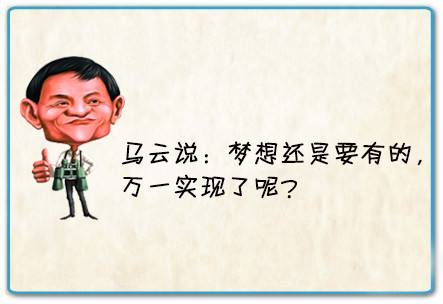

慢生活 “慢生活”不是懒惰，放慢速度不是拖延时间，而是让我们在生活中寻找到平衡。 不再因为别人过得好而焦虑，在没有人看得到你的时候依旧能保持节奏 欲将心事付瑶琴，知音少，弦断有谁听 无意苦争春，一任群芳妒。零落成泥碾作尘，只有香如故 一个人最好的模样大概是平静一点，坦然接受自己所有的弱点，不再因为别人过得好而焦虑，在没有人看得到你的时候依旧能保持节奏...... 看破三千世界，惊醒一夕清梦，分别，然后遗忘，便是一切 逃避自己的人，最终只能导致自己世界的崩塌，而变得越来越没有安全感。 生长恨欢娱少，肯爱千金轻一笑。为君持酒劝斜阳，且向花间留晚照。 独自莫凭栏，无限江山，别时容易见时难。流水落花春去也，天上人间 02-10 2017 梦想——十三亿分之你 最近看了htt的演讲，还是有很多感触的。梦想–十三亿分之你... 阅读全文>> 01-05 2017 基于阴阳师姑获鸟皮肤获得的总结 最近，网易游戏《阴阳师》出了一个活动，大致就是在刷各种副本的时候，会随机掉落姑获鸟的典藏皮肤。对于这个活动... 阅读全文>>